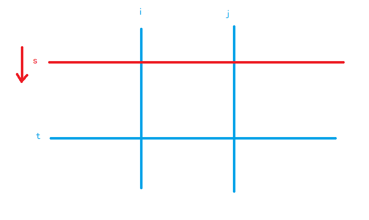

A
AcWing 4644. 求和
https://www.acwing.com/problem/content/4647/
给定 n 个整数 a1,a2,⋅⋅⋅,an ，求它们两两相乘再相加的和，即
S=a1⋅a2+a1⋅a3+⋅⋅⋅+a1⋅an+a2⋅a3+⋅⋅⋅+an−2⋅an−1+an−2⋅an+an−1⋅an
输入格式
输入的第一行包含一个整数 n
第二行包含 n 个整数 a1,a2,⋅⋅⋅,an
输出格式
输出一个整数 S，表示所求的和。
请使用合适的数据类型进行运算。
数据范围
对于 30%的数据，1≤n≤1000，1≤ai≤100。 对于所有评测用例，1≤n≤200000，1≤ai≤1000
输入样例：
1421 3 6 9
输出样例：
xxxxxxxxxx11117
x1
3using namespace std;4typedef long long int LL;5
6int main() {7 int n;8 cin >> n;9 LL s1 = 0, s2 = 0;10 while (n--) {11 int x;12 scanf("%d", &x);13 s1 += x;14 s2 += x * x;15 }16 printf("%lld", (s1 * s1 - s2) / 2);17 return 0;18}
AcWing 4645. 选数异或
https://www.acwing.com/problem/content/4648/
给定一个长度为 n 的数列 A1,A2,⋅⋅⋅,An 和一个非负整数 x，给定 m 次查询，每次询问能否从某个区间 [l,r] 中选择两个下标不同的数使得他们的异或等于 x
输入格式
输入的第一行包含三个整数 n,m,x
第二行包含 n 个整数 A1,A2,⋅⋅⋅,An 接下来 m 行，每行包含两个整数 li,ri 表示询问区间 [li,ri]
输出格式
对于每个询问，如果该区间内存在两个数的异或为 x
则输出 yes，否则输出 no。
数据范围
对于 20% 的评测用例，1≤n,m≤100； 对于 40% 的评测用例，1≤n,m≤1000； 对于所有评测用例，1≤n,m≤100000，0≤x<220，1≤li≤ri≤n，0≤Ai<220
输入样例：
xxxxxxxxxx614 4 121 2 3 431 441 252 363 3
输出样例：
xxxxxxxxxx41yes2no3yes4no
样例解释
显然整个数列中只有 2,3 的异或为 1。
xxxxxxxxxx231
3using namespace std;4const int N = 1e5 + 10, M = (1 << 20) + 10;5int n, m, x;6int last[M], g[N];7
8int main() {9 cin >> n >> m >> x;10 for (int i = 1; i <= n; ++i) {11 int a;12 scanf("%d", &a);13 g[i] = max(g[i - 1], last[a ^ x]);14 last[a] = i;15 }16 while (m--) {17 int l, r;18 scanf("%d%d", &l, &r);19 if (g[r] >= l) puts("yes");20 else puts("no");21 }22 return 0;23}
B
AcWing 4402. 刷题统计
https://www.acwing.com/problem/content/4405/
小明决定从下周一开始努力刷题准备蓝桥杯竞赛。
他计划周一至周五每天做 a 道题目，周六和周日每天做 b 道题目。
请你帮小明计算，按照计划他将在第几天实现做题数大于等于 n 题？
输入格式
输入一行包含三个整数 a,b 和 n
输出格式
输出一个整数代表天数。
数据范围
对于 50% 的评测用例，1≤a,b,n≤106， 对于 100% 的评测用例，1≤a,b,n≤1018
输入样例：
xxxxxxxxxx1110 20 99
输出样例：
xxxxxxxxxx118
xxxxxxxxxx301
3using namespace std;4typedef long long int LL;5
6int main() {7 LL a, b, n;8 cin >> a >> b >> n;9 LL sum = 0, day = 0;10 LL tot = 5 * a + 2 * b;11 if (tot < n) {12 day += n / tot * 7;13 sum += tot * (n / tot);14 }15
16 while (sum < n) {17 for (int i = 0; i < 5; ++i) {18 if (sum >= n) break;19 sum += a;20 day++;21 }22 for (int i = 0; i < 2; ++i) {23 if (sum >= n) break;24 sum += b;25 day++;26 }27 }28 cout << day << endl;29 return 0;30}xxxxxxxxxx261
5using namespace std;6
7typedef long long LL;8
9int main() {10 LL a, b, n;11
12 cin >> a >> b >> n;13
14 LL s = 5 * a + 2 * b;15 LL res = n / s * 7;16 n %= s;17
18 LL d[] = {a, a, a, a, a, b, b};19 for (int i = 0; n > 0; i++) {20 n -= d[i];21 res++;22 }23
24 cout << res << endl;25 return 0;26}
AcWing 4403. 修剪灌木
https://www.acwing.com/problem/content/4406/
爱丽丝要完成一项修剪灌木的工作。
有 N 棵灌木整齐的从左到右排成一排。
爱丽丝在每天傍晚会修剪一棵灌木，让灌木的高度变为 0 厘米。
爱丽丝修剪灌木的顺序是从最左侧的灌木开始，每天向右修剪一棵灌木。
当修剪了最右侧的灌木后，她会调转方向，下一天开始向左修剪灌木。
直到修剪了最左的灌木后再次调转方向。
然后如此循环往复。
灌木每天从早上到傍晚会长高 1厘米，而其余时间不会长高。
在第一天的早晨，所有灌木的高度都是 0 厘米。爱丽丝想知道每棵灌木最高长到多高。
输入格式
一个正整数 N ，含义如题面所述。
输出格式
输出 N 行，每行一个整数，第行表示从左到右第 i 棵树最高能长到多高。
数据范围
对于 30% 的数据，N≤10， 对于 100% 的数据，1<N≤10000
输入样例：
xxxxxxxxxx113
输出样例：
xxxxxxxxxx3142234xxxxxxxxxx141
3using namespace std;4const int N = 10010;5int n, a[N];6
7int main() {8 cin >> n;9 for (int i = 1; i <= n; ++i) {10 a[i] = max((i - 1) * 2, (n - i) * 2);11 }12 for (int i = 1; i <= n; ++i) printf("%d\n", a[i]);13 return 0;14}xxxxxxxxxx141
4using namespace std;5
6int main() {7 int n;8 cin >> n;9
10 for (int i = 1; i <= n; i++)11 cout << max(i - 1, n - i) * 2 << endl;12
13 return 0;14}
AcWing 4404. X 进制减法
https://www.acwing.com/problem/content/4407/
进制规定了数字在数位上逢几进一。
X 进制是一种很神奇的进制，因为其每一数位的进制并不固定！
例如说某种 X 进制数，最低数位为二进制，第二数位为十进制，第三数位为八进制，则 X 进制数 321 转换为十进制数为 65。
现在有两个 X 进制表示的整数 A 和 B，但是其具体每一数位的进制还不确定，只知道 A 和 B 是同一进制规则，且每一数位最高为 N 进制，最低为二进制。
请你算出 A−B 的结果最小可能是多少。
请注意，你需要保证 A 和 B 在 X 进制下都是合法的，即每一数位上的数字要小于其进制。
输入格式
第一行一个正整数 N，含义如题面所述。
第二行一个正整数 Ma，表示 X 进制数 A 的位数。
第三行 Ma 个用空格分开的整数，表示 X 进制数 A 按从高位到低位顺序各个数位上的数字在十进制下的表示。
第四行一个正整数 Mb，表示 X 进制数 B 的位数。
第五行 Mb 个用空格分开的整数，表示 X 进制数 B 按从高位到低位顺序各个数位上的数字在十进制下的表示。
请注意，输入中的所有数字都是十进制的。
输出格式
输出一行一个整数，表示 X 进制数 A−B 的结果的最小可能值转换为十进制后再模 1000000007 的结果。
数据范围
对于 30% 的数据，N≤10;Ma,Mb≤8， 对于 100% 的数据，2≤N≤1000;1≤Ma,Mb≤100000;A≥B
输入样例：
xxxxxxxxxx511123310 4 04351 2 0
输出样例：
xxxxxxxxxx1194
样例解释
当进制为：最低位 2 进制，第二数位 5 进制，第三数位 11 进制时，减法得到的差最小。
此时 A 在十进制下是 108，B 在十进制下是 14，差值是 94。
xxxxxxxxxx251
3using namespace std;4typedef long long int LL;5const int N = 1e5 + 10, mod = 1000000007;6int n, a[N], b[N], l1, l2;7LL d[N];8
9int main() {10 cin >> n;11 cin >> l1;12 for (int i = 0; i < l1; ++i) scanf("%d", &a[i]);13 cin >> l2;14 for (int i = l1 - l2; i < l1; ++i) scanf("%d", &b[i]);15 for (int i = 1; i < l1; ++i) d[i] = max(2, max(a[i], b[i]) + 1);16 d[l1] = 1;17 for (int i = l1 - 1; i > 0; --i) d[i] = (d[i] * d[i + 1]) % mod;18 LL ans = 0;19 int i = 0;20 for (int i = 0; i < l1; ++i) {21 ans = ((a[i] - b[i]) * d[i + 1] + ans + mod) % mod;22 }23 cout << ans;24 return 0;25}所有的 P 进制 都取到可能值中最小的那个
xxxxxxxxxx281
4using namespace std;5
6typedef long long LL;7
8const int N = 100010, MOD = 1000000007;9
10int n, m1, m2, m;11int a[N], b[N];12
13int main() {14 scanf("%d", &n);15 scanf("%d", &m1);16 for (int i = m1 - 1; i >= 0; i--) scanf("%d", &a[i]);17 scanf("%d", &m2);18 for (int i = m2 - 1; i >= 0; i--) scanf("%d", &b[i]);19
20 int m = max(m1, m2);21
22 int res = 0;23 for (int i = m - 1; i >= 0; i--)24 res = (res * (LL) max({2, a[i] + 1, b[i] + 1}) + a[i] - b[i]) % MOD;25
26 printf("%d\n", res);27 return 0;28}
AcWing 4404. X 进制减法
https://www.acwing.com/problem/content/4408/
给定一个 N×M 的矩阵 A，请你统计有多少个子矩阵 (最小 1×1，最大 N×M) 满足子矩阵中所有数的和不超过给定的整数 K?
输入格式
第一行包含三个整数 N,M 和 K。之后 N 行每行包含 M 个整数，代表矩阵 A。
输出格式
一个整数代表答案。
数据范围
对于 30% 的数据，N,M≤20
对于 70% 的数据，N,M≤100
对于 100% 的数据，1≤N,M≤500;0≤A[i][j]≤1000;1≤K≤2.5×108。
输入样例：
xxxxxxxxxx413 4 1021 2 3 435 6 7 849 10 11 12
输出样例：
xxxxxxxxxx1119
样例解释
满足条件的子矩阵一共有 19，包含：
大小为 1×1 的有 10 个。
大小为 1×2 的有 3 个。
大小为 1×3 的有 2 个。
大小为 1×4 的有 1 个。
大小为 2×1 的有 3 个。
xxxxxxxxxx281
3using namespace std;4typedef long long int LL;5const int N = 510;6int n, k, m;7int a[N][N];8
9int main() {10 cin >> n >> m >> k;11 for (int i = 1; i <= n; i++) {12 for (int j = 1; j <= m; j++) {13 scanf("%d", &a[i][j]);14 a[i][j] += a[i - 1][j] + a[i][j - 1] - a[i - 1][j - 1];15 }16 }17
18 LL ans = 0;19 for (int i = 1; i <= m; ++i)20 for (int j = i; j <= m; ++j) {21 for (int s = 1, t = 1; t <= n; ++t) {22 while (s <= t && a[t][j] - a[s - 1][j] - a[t][i - 1] + a[s - 1][i - 1] > k) s++;23 if (s <= t) ans += t - s + 1;24 }25 }26 cout << ans;27 return 0;28}优化的方法是：
枚举子矩阵的左边界i 和右边界j
用 快指针t枚举 子矩阵的下边界，慢指针s维护 子矩阵的上边界 (s ≤ t)
如果得到的子矩阵的权值和 大于 k，则慢指针s前进，而子矩阵和必将单调不增
慢指针s继续前进（如图），直到 子矩阵的和 不大于k，慢指针没必要前进了，因为该子矩阵的所有宽度为 j - i + 1 的子矩阵（总共 t - s + 1 种）一定满足要求，更新该情况对答案的贡献 t - s + 1；反之，如果慢指针s越界（s > t），则不操作，直接进入下层循环

C
AcWing 4652. 纸张尺寸
https://www.acwing.com/problem/content/4655/
在 ISO 国际标准中定义了 A0 纸张的大小为 1189mm×841mm，将 A0 纸沿长边对折后为 A1 纸，大小为 841mm×594mm，在对折的过程中长度直接取下整（实际裁剪时可能有损耗）。
将 A1 纸沿长边对折后为 A2 纸，依此类推。
输入纸张的名称，请输出纸张的大小。
输入格式
输入一行包含一个字符串表示纸张的名称，该名称一定是 A0、A1、A2、A3、A4、A5、A6、A7、A8、A9 之一。
输出格式
输出两行，每行包含一个整数，依次表示长边和短边的长度。
输入样例1：
xxxxxxxxxx11A0
输出样例1：
xxxxxxxxxx2111892841
输入样例2：
xxxxxxxxxx11A1
输出样例2：
xxxxxxxxxx218412594
自己写的
把数据预先处理好，存入数组
xxxxxxxxxx241
3using namespace std;4typedef pair<int, int> PII;5
6const int N = 15;7PII s[N];8
9int main() {10 int a = 1189, b = 841;11 for (int i = 0; i < 10; i++) {12 s[i].first = a;13 s[i].second = b;14 a /= 2;15 if (b > a) swap(a, b);16 }17
18 string ss;19 cin >> ss;20
21 cout << s[ss[1] - '0'].first << endl;22 cout << s[ss[1] - '0'].second << endl;23 return 0;24}从网上看到的别人写的算法
不开辟数组，也不提前预处理好所有数据，根据需要处理，要求处理到第几个就处理到第几个
xxxxxxxxxx201
3using namespace std;4typedef pair<int, int> PII;5
6int main() {7 int a = 1189, b = 841;8
9 string ss;10 cin >> ss;11
12 int m = ss[1] - '0';13
14 while (m--) {15 a > b ? a >>= 1 : b >>= 1;16 }17 cout << (a > b ? a : b) << endl;18 cout << (a < b ? a : b) << endl;19 return 0;20}y总代码
xxxxxxxxxx201
5using namespace std;6
7int main()8{9 int n;10 scanf("A%d", &n);11 int x = 1189, y = 841;12 while (n -- )13 {14 x /= 2;15 if (x < y) swap(x, y);16 }17
18 printf("%d\n%d\n", x, y);19 return 0;20}y总处理这种输入的方法也值得学习
AcWing 4644. 求和
https://www.acwing.com/problem/content/description/4647/
给定 nn 个整数 a1,a2,⋅⋅⋅,an，求它们两两相乘再相加的和，即
S=a1⋅a2+a1⋅a3+⋅⋅⋅+a1⋅an+a2⋅a3+⋅⋅⋅+an−2⋅an−1+an−2⋅an+an−1⋅an
输入格式
输入的第一行包含一个整数 n。
第二行包含 n 个整数 a1,a2,⋅⋅⋅,an
输出格式
输出一个整数 S，表示所求的和。
请使用合适的数据类型进行运算。
数据范围
对于 30% 的数据，1≤n≤1000，1≤ai≤100 对于所有评测用例，1≤n≤200000，1≤ai≤1000
输入样例：
xxxxxxxxxx21421 3 6 9
输出样例：
xxxxxxxxxx11117
自己写的
xxxxxxxxxx241
3using namespace std;4typedef long long int LL;5const int N = 200010;6int a[N], s[N];7int n;8
9int main() {10 cin >> n;11
12 for (int i = 1; i <= n; i++) {13 scanf("%d", &a[i]);14 s[i] = a[i] + s[i - 1];15 }16
17 LL res = 0;18 int k = 1;19 for (int i = 1; i < n; i++) {20 res += (LL) a[i] * (s[n] - s[k++]);//注意这里需要强制类型转换21 }22 cout << res;23 return 0;24}利用前缀和处理的思路如下所示：

y总代码
xxxxxxxxxx241
5using namespace std;6
7typedef long long LL;8
9int main()10{11 int n;12 scanf("%d", &n);13
14 LL s1 = 0, s2 = 0;15 while (n -- )16 {17 int x;18 scanf("%d", &x);19 s1 += x, s2 += x * x;20 }21
22 printf("%lld\n", (s1 * s1 - s2) / 2);23 return 0;24}利用数学算式化简来解决问题

AcWing 4653. 数位排序
https://www.acwing.com/problem/content/submission/4656/
小蓝对一个数的数位之和很感兴趣，今天他要按照数位之和给数排序。
当两个数各个数位之和不同时，将数位和较小的排在前面，当数位之和相等时，将数值小的排在前面。
例如，2022 排在 409 前面，因为 2022 的数位之和是 6，小于 409 的数位之和 13。
又如，6 排在 2022 前面，因为它们的数位之和相同，而 6 小于 2022。
给定正整数 n，m，请问对 1 到 n 采用这种方法排序时，排在第 m 个的元素是多少？
输入格式
输入第一行包含一个正整数 n。
第二行包含一个正整数 m。
输出格式
输出一行包含一个整数，表示答案。
数据范围
对于 30% 的评测用例，1≤m≤n≤300 对于 50% 的评测用例，1≤m≤n≤1000 对于所有评测用例，1≤m≤n≤106
输入样例：
xxxxxxxxxx211325
输出样例：
xxxxxxxxxx113
样例解释
1 到 13 的排序为：1,10,2,11,3,12,4,13,5,6,7,8,9。
第 5 个数为 3。
自己写的
xxxxxxxxxx231
3using namespace std;4const int N = 1e6 + 10;5typedef pair<int, int> PII;6int n, m;7PII a[N];8
9int main() {10 cin >> n >> m;11 for (int i = 0; i < n; ++i) {12 int x = i + 1;13 int s = 0;14 while (x) {15 s += x % 10;16 x /= 10;17 }18 a[i] = {s, i + 1};19 }20 sort(a, a + n);21 printf("%d\n", a[m - 1].second);22 return 0;23}
AcWing 4645. 选数异或
https://www.acwing.com/problem/content/4648/
给定一个长度为 n 的数列 A1,A2,⋅⋅⋅,An 和一个非负整数 x，给定 m 次查询，每次询问能否从某个区间 [l,r] 中选择两个下标不同的数使得他们的异或等于 x
输入格式
输入的第一行包含三个整数 n,m,x
第二行包含 n 个整数 A1,A2,⋅⋅⋅,An 接下来 m 行，每行包含两个整数 li,ri 表示询问区间 [li,ri]
输出格式
对于每个询问，如果该区间内存在两个数的异或为 x
则输出 yes，否则输出 no。
数据范围
对于 20% 的评测用例，1≤n,m≤100； 对于 40% 的评测用例，1≤n,m≤1000； 对于所有评测用例，1≤n,m≤100000，0≤x<220，1≤li≤ri≤n，0≤Ai<220
输入样例：
xxxxxxxxxx614 4 121 2 3 431 441 252 363 3
输出样例：
xxxxxxxxxx41yes2no3yes4no
样例解释
显然整个数列中只有 2,3 的异或为 1。
xxxxxxxxxx231
3using namespace std;4const int N = 1e5 + 10, M = (1 << 20) + 10;5int n, m, x;6int last[M], g[N];7
8int main() {9 cin >> n >> m >> x;10 for (int i = 1; i <= n; ++i) {11 int a;12 scanf("%d", &a);13 g[i] = max(g[i - 1], last[a ^ x]);14 last[a] = i;15 }16 while (m--) {17 int l, r;18 scanf("%d%d", &l, &r);19 if (g[r] >= l) puts("yes");20 else puts("no");21 }22 return 0;23}首先根据异或性质可得出：
也就是说，对于已经给出的 a 数组，可以求出每一个 ai 对应的异或值。
这是考虑设 fi 表示当i为右端点时，[1,i] 中所有的合法异或值对中最大的左端点。当询问区间 [l,r] 时，只需检验 fr 是否在区间内即可。
AcWing 4655. 重新排序
https://www.acwing.com/problem/content/description/4658/
给定一个数组 A 和一些查询 Li,Ri，求数组中第 Li 至第 Ri 个元素之和。
小蓝觉得这个问题很无聊，于是他想重新排列一下数组，使得最终每个查询结果的和尽可能地大。
小蓝想知道相比原数组，所有查询结果的总和最多可以增加多少?
输入格式
输入第一行包含一个整数 n。
第二行包含 n 个整数 A1,A2,⋅⋅⋅,An，相邻两个整数之间用一个空格分隔。
第三行包含一个整数 m 表示查询的数目。
接下来 m 行，每行包含两个整数 Li、Ri，相邻两个整数之间用一个空格分隔。
输出格式
输出一行包含一个整数表示答案。
数据范围
对于 30% 的评测用例，n,m≤50 对于 50% 的评测用例，n,m≤500 对于 70% 的评测用例，n,m≤5000 对于所有评测用例，1≤n,m≤105，1≤Ai≤106，1≤Li≤Ri≤n
输入样例：
xxxxxxxxxx51521 2 3 4 53241 352 5
输出样例：
xxxxxxxxxx114
样例解释
原来的和为 6+14=20，重新排列为 (1,4,5,2,3) 后和为 10+14=24，增加了 4。
自己写的
利用一个前缀和数组和一个差分数组
前缀和数组记录重新排列前的答案
差分数组用来记录被询问的次数
对差分数组求一个前缀和，得到被询问的次数，然后把被询问次数按照从大到小排序，把原数组从大到小排序，求 d[i] * a[i] 的乘积，这样就不用求重新排序后的数列
xxxxxxxxxx381
3using namespace std;4const int N = 1e5 + 10;5typedef long long LL;6
7int a[N];8LL s[N];9int d[N];10int n, m;11
12int main() {13 cin >> n;14 for (int i = 1; i <= n; i++) {15 scanf("%d", &a[i]);16 s[i] = s[i - 1] + a[i];17 }18 19 cin >> m;20 LL ans1 = 0, ans2 = 0;21 for (int i = 0; i < m; i++) {22 int l, r;23 cin >> l >> r;24 d[l] += 1;25 d[r + 1] -= 1;26 ans1 += s[r] - s[l - 1];27 }28
29 for (int i = 1; i <= n; i++) d[i] += d[i - 1];30
31 sort(d, d + n + 1, greater<>());32 sort(a, a + n + 1, greater<>());33
34 for (int i = 0; d[i]; ++i) ans2 += (LL) d[i] * a[i];35
36 cout << ans2 - ans1;37 return 0;38}有一个巨大的坑点：本题会爆 int ，所以要开 LL 但是一定要注意强制类型转换
xxxxxxxxxx11for (int i = 0; d[i]; ++i) ans2 += (LL) d[i] * a[i];变量ans2是 LL 类型，而 d数组和a数组是 int 类型，所以一定要强制类型转换